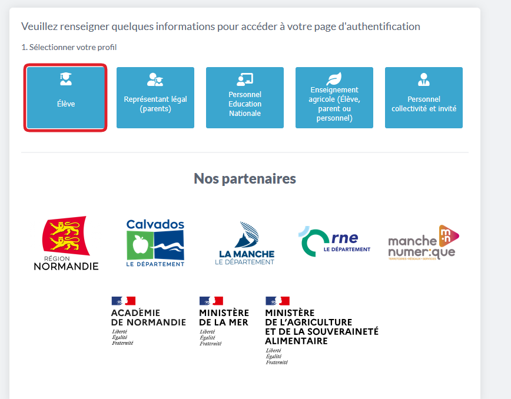
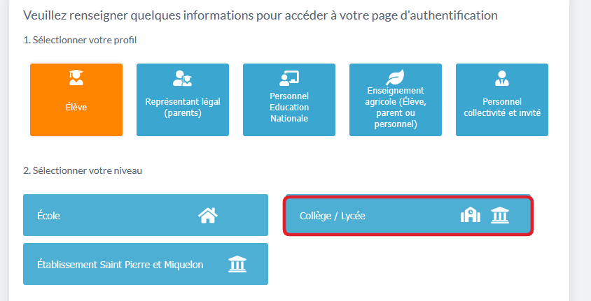
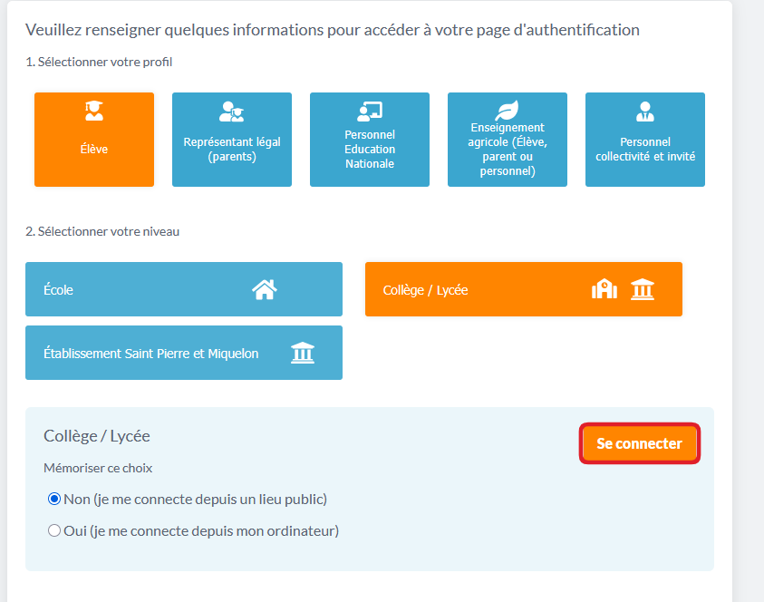
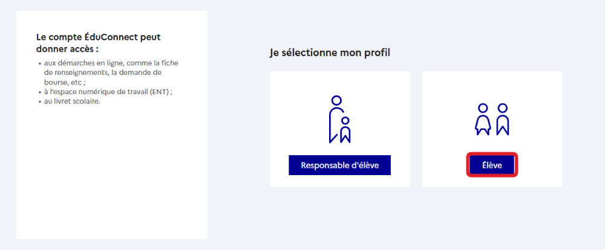
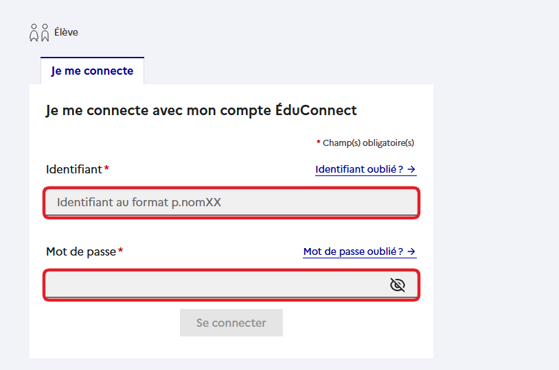

AFFICHE — JE ME CONNECTE À L'ENT
Une seule page A4, à afficher au mur près des ordinateurs. Les six étapes d'un coup d'œil. Le guide papier à cinq pages reste pour la main de l'élève : celle-ci est le repère qu'il lève les yeux pour retrouver.
IMPRIMER
Une A4 par poste, ou une A3 pour le mur du fond.
JE ME CONNECTE À L'ENT
www.l-educdenormandie.fr
l comme lycée, puis un tiret
1
J'écris l'adresse.
www.l-educdenormandie.fr
En haut, dans la barre blanche.
2
Je clique sur ÉLÈVE.

3
Je clique sur COLLÈGE / LYCÉE.

4
Je clique sur SE CONNECTER.

Je laisse « Non ».
5
Je clique sur ÉLÈVE.

ÉLÈVE est à droite.
6
J'écris mon identifiant et mon mot de passe.
